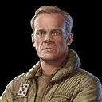
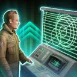
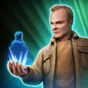
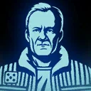
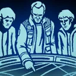

Deal Physical damage to target enemy and inflict Vulnerable for 1 turn. On General Draven's turn, call target other Rebel Fighter ally to assist.

Rebel allies recover 25% Health and Protection. Rebel Fighter allies gain 10% Defense Penetration (stacking, max 50%) until the end of the encounter. If the ally in the Leader slot is Mon Mothma, dispel all debuffs from Rebel Fighter allies and summon Rebel Trooper and promote them to Rebel Commander. If Rebel Trooper or Rebel Officer is already present, promote them to Rebel Commander.
Rebel Commander gains 75% Critical Damage and 25% Offense for 2 turns.

Dispel Resilient Defense, Stealth, and Taunt from all enemies. Inflict Tenacity Down, which can't be evaded, and Daze target enemy for 1 turn.

At the start of Draven's turn, allied Mon Mothma gains 10% Turn Meter and at the start of allied Mon Mothma's turn, Draven gains 10% Turn Meter. At the start of allied Rebel Trooper's turn, Draven and Mon Mothma gain 5% Turn Meter. Whenever a Rebel Fighter ally Rallies, reduce the cooldown of Draven's abilities by 1 (once per turn).

General Draven and Mon Mothma have +100% Critical Avoidance. At the start of allied Rebel Trooper's turn, the ally with the lowest Turn Meter gains 15% Turn Meter.
Whenever Rebel Trooper uses an ability during his turn, inflict Buff Immunity on target enemy for 1 turn. If the ally in the Leader slot is Mon Mothma, whenever any Rebel Fighter ally recovers Protection, that ally gains 2% Tenacity (stacking, max 50%) until the end of battle. Whenever General Draven uses a Special ability, reduce the cooldowns of Mon Mothma's abilities by 1.
Omicron Boost : While in Territory Wars and there are no Galactic Legends: At the start of battle, Rebel Fighter allies gain 50% Max Health and Max Protection. Whenever a Rebel Fighter ally is revived, they gain Damage Immunity for 1 turn and Rebel Fighter allies recover 100% Health and Protection. Rebel Fighter allies have +100% Offense while attacking out of turn, and Rebel Fighter allies gain 5% Critical Damage (stacking, max 150%) until the end of battle.